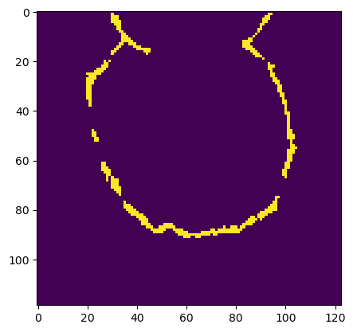
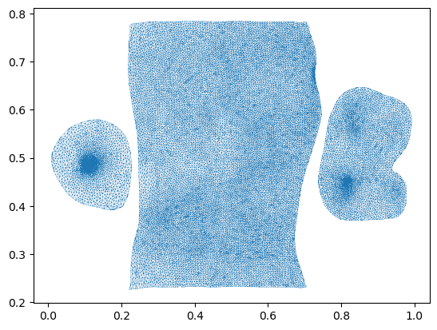
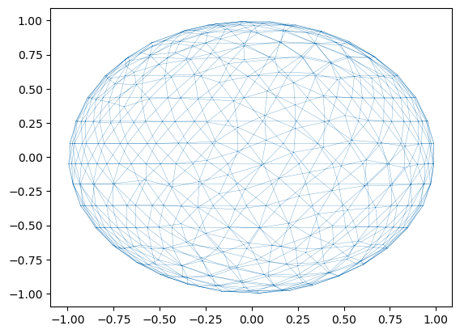

# let's look at an example first. let's load the example segmentation
segmentation = tcio.read_h5(f"datasets/reconstruction_example/ilastik_probabilities.h5")[0]
# now let's select all the points where the segmentation probability exceeds some threshold to get our point cloud
threshold = 0.95
segmentation_binary = segmentation>threshold
segmentation_binary = ndimage.binary_erosion(segmentation_binary, iterations=1)
points = np.stack(np.where(segmentation_binary), axis=-1)Mesh creation and remeshing with MeshLab
Create meshes from point clouds sets (Poisson recontruction cubes) and improve mesh quality with remeshing, using
pymeshlab as backend
This notebook contains functions for (a) creating a mesh from a point cloud, (b) subdividing meshes while preserving UV information, and (c) remeshing (which destroys UV information), using pymeshlab.
Compared to the igl-based remesh module, there are some more powerful remeshing algorithms: isotropic remeshing, which creates a new mesh with (close-to) equal-sized, equilateral triangles (great for improving a marching cubes mesh), and adaptive subdivision (subdivide long edges only).
Constructing a mesh from a point cloud (rather than from a volumetric using marching cubes) is sometimes useful when the surface you are interested in is not the boundary of a volume (e.g. a membrane floating in free space).
Subdivision is useful since it allows one to increase or decrease the mesh “resolution” as needed when the mesh is deformed. The advantage of pymeshlab-based subdivision is that it allows subdividing “long” edges only, while igl-based subdivision subdivides all edges, which (exponentially) increases the number of your vertices.
Poisson reconstruction
Poisson reconstruction is an algorithm to reconstruct a mesh from a point cloud. It requires the points to be equipped with normal vectors, which are computed in the first step.
This is useful for surfaces that are not the boundary of a solid volume, like a membrane.
zslice = 80
plt.imshow(segmentation_binary[zslice,:,:])
# A point cloud is simply a mesh with no faces
point_cloud = tcmesh.ObjMesh(vertices=points, faces=[])
point_cloud_pymeshlab = intmsl.convert_to_pymeshlab(point_cloud)# let's create a pymeshlab instance and add out point cloud to it
# There are three relevant filters we will use:
# generate_simplified_point_cloud - reduce number of points in point cloud
# compute_normal_for_point_clouds - estimate normals for point cloid. This is required for the next step
# generate_surface_reconstruction_screened_poisson - Surface reconstruction by Poisson reconstruction
ms = pymeshlab.MeshSet()
ms.add_mesh(point_cloud_pymeshlab)
ms.generate_simplified_point_cloud(samplenum=1000)
ms.compute_normal_for_point_clouds(k=20, smoothiter=2)
ms.generate_surface_reconstruction_screened_poisson(depth=8, fulldepth=5,)
ms.meshing_isotropic_explicit_remeshing(iterations=10, targetlen=pymeshlab.PercentageValue(1))
mesh_reconstructed = intmsl.convert_from_pymeshlab(ms.current_mesh())mesh_reconstructed.faces.shape(22156, 3)reconstruct_poisson
reconstruct_poisson (points, samplenum=1000, k_neighbor_normals=10, reconstruc_args=None)
*Reconstruct triangular mesh from a point cloud.
Recommended to use isotropic remeshing after to improve mesh quality (remesh_pymeshlab). Wrapper of pymeshlab filter generate_surface_reconstruction_screened_poisson See pymeshlab.readthedocs.io/en/latest/filter_list.html for its arguments.*
| Type | Default | Details | |
|---|---|---|---|
| points | np.array of shape (n_points, 3) | Point cloud. | |
| samplenum | int | 1000 | Sample number for point cloud simplification. Smaller values lead to more simplification of the point cloud and faster processing |
| k_neighbor_normals | int | 10 | Nearest neighbors for constructing normal vectors to point cloud |
| reconstruc_args | NoneType | None | Arguments to surface reconstruction algorithm/ |
| Returns | tcmehs.ObjMesh | Reconstructed surface. |
reconstruct_poisson(points)<blender_tissue_cartography.mesh.ObjMesh>Subdivision / simplification
subdivide_pymeshlab
subdivide_pymeshlab (mesh, threshold=1, iterations=3, reglue=True, decimals=None)
*Refine mesh by edge subdivision using pymeshlab.
Subdivides all edges by placing new vertices at edge midpoints. Preserves UV information, by cutting the mesh along seams and (optionally) gluing back after. New texture vertices are also placed at texture-edge midpoints.
In contrast to remeshing_igl.subdivide_igl, you can choose to subdivide long edges only, which is very useful to increase mesh resolution only where necessary.*
| Type | Default | Details | |
|---|---|---|---|
| mesh | ObjMesh | Initial mesh. | |
| threshold | int | 1 | All the edges longer than this threshold will be refined. In percent? Lower values mean more subdivision. Setting this value to zero will force an uniform refinement. |
| iterations | int | 3 | Filter iterations |
| reglue | bool | True | Glue back after cutting |
| decimals | NoneType | None | Decimal precision for merging vertices when regluing. If None, estimate from the average edge mesh length as -4*log_10(avg length) |
| Returns | ObjMesh | Subdivided mesh. |
mesh_test = tcmesh.ObjMesh.read_obj("datasets/movie_example/initial_uv.obj")
mesh_subdiv = subdivide_pymeshlab(mesh_test, reglue=True, threshold=1)Warning: readOBJ() ignored non-comment line 4:
o mesh_01_cylinder_seams_uvmesh_test.vertices.shape, mesh_subdiv.vertices.shape((20212, 3), (12625, 3))plt.triplot(*mesh_subdiv.texture_vertices.T, mesh_subdiv.texture_tris, lw=0.2)
Isotropic remeshing
Will dstroy UV information. Only use it before you create your UV maps.
remesh_pymeshlab
remesh_pymeshlab (mesh, targetlen=1, iterations=10)
*Remesh mesh using pymeshlab.
This creates a triangulation where triangles are close to equilateral and everywhere the same size. Very useful to improve the output of marching cubes. Uses the meshing_isotropic_explicit_remeshing filter.
This function erases UV information!*
| Type | Default | Details | |
|---|---|---|---|
| mesh | ObjMesh | Initial mesh. | |
| targetlen | int | 1 | Percent value for target edge length. |
| iterations | int | 10 | Number of iterations. |
| Returns | ObjMesh | Simplified mesh. |
mesh = tcmesh.ObjMesh.read_obj("datasets/movie_example/uv_sphere.obj")mesh_remeshed = remesh_pymeshlab(mesh, iterations=10, targetlen=5)mesh_remeshed.only_verticesTrueplt.triplot(*mesh_remeshed.vertices[:,:2].T, mesh_remeshed.tris, lw=0.2)
mesh_remeshed.write_obj("datasets/movie_example/isotropic_remeshed.obj")